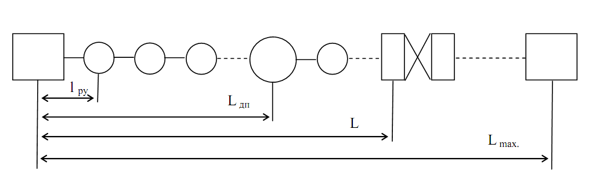

Тема №5. Устройство и эксплуатация цифровых систем телекоммуникаций.
Занятие №2. Устройство и принцип работы аппаратуры комплекса цифровых систем передачи П-331 «Импульс».
Учебные вопросы:
Литература:
1. Устройство и принцип работы аппаратуры объединения (разделения) цифровых сигналов.
1.1. Назначение, состав и технические характеристики моноблока ИО-1.
Аппаратура ИО-1 предназначена для временного объединения и разделения цифровых каналов (КЦ) со скоростями передачи 1,2; 2,4 или 4,8 кбит/с, образования «прозрачных» телеграфных каналов (ПТК) со скоростями до 100 или 200 Бод, служебного стартстопного телеграфного канала (СТК) 50 Бод и синхронного контрольного канала (СКК) со скоростями 20,37 или 40,74 бит/с. Групповой сигнал ИО-1 может вводиться в цифровые каналы ИО-2 или передаваться по линиям связи, а также каналам и трактам другой аппаратуры, сопрягающейся с ИО-1. Аппаратура ИО-1 обеспечивает организацию транзита на линейный выход аппаратуры без обработки входного сигнала первого КЦ и входного группового сигнала на выход первого цифрового канала.
Дополнительные режимы работы:
- режим синхронного транзита группового сигнала с одного комплекта аппаратуры на другой с возможностью ответвления любого канала (режим О) и дистанционного управления ответвлением служебного и контрольного каналов;
- режим внешней синхронизации тактовой частоты передающей части аппаратуры ИО-1 при синхронном вводе в каналы, образуемые ИО-2 (режим С);
- режим внешнего управления фазой группового сигнала передающей части ИО-1 биимпульсным сигналом, поступающим извне со скоростью, соответствующей групповой скорости аппаратуры ИО-1 (режим Ф).
1.2. Назначение, состав и технические характеристики моноблока ИО-2.
Аппаратура ИО-2А (передающая часть) и аппаратуры ИО-2Б (приемная часть) предназначены для передачи по цифровым трактам с номинальной скоростью передачи символов 48 кбит/с, а также по цифровым каналам со скоростью передачи символов 48 кбит/с, образуемым аппаратурой ИО-3А и ИО-3Б, девяти синхронно-асинхронных цифровых каналов с номинальной скоростью передачи символов 4,8 кбит/с каждый.
Кроме того, аппаратура обеспечивает объединение одного синхронно-асинхронного канала с номинальной скоростью передачи символов 2,4 кбит/с, одного «прозрачного» телеграфного канала со скоростью передачи символов до 100 Бод, одного служебного телеграфного канала со скоростью передачи символов до 50 Бод и одного синхронного контрольного канала со скоростью передачи символов 40 бит/с, а также организацию транзита без обработки входного сигнала:
- в аппаратуре ИО-2А – первого канала на групповой выход;
- в аппаратуре ИО-2Б – многоканального на выход первого комплекта приемного индивидуального оборудования.
Аппаратура ИО-2А обеспечивает образование многоканального сигнала со скоростью передачи символов 48 кбит/с путем поочередной передачи (посимвольное объединение) единичных элементов информационных сигналов всех 9 каналов 4,8 кбит/с.
Кроме того, в многоканальном сигнале, также на основе временного деления, предусмотрены единичные интервалы для образования канала 2,4 кбит/с, «прозрачного» и служебного телеграфных каналов, синхронного контрольного канала и других служебных целей.
Аппаратура ИО-2Б обеспечивает временное разделение многоканального сигнала со скоростью передачи символов 4,8 кбит/с и восстановление до исходного вида объединенных и переданных аппаратурой ИО-2А цифровых сигналов, для чего в аппаратуре ИО-2Б производятся преобразования цифровых сигналов, обратные преобразованиям, выполняемым в аппаратуре ИО-2А.
Количество каналов:
- синхронно-асинхронных со скоростью передачи символов 4,8 кбит/с – 9, при попарном объединении каналов обеспечивается до 4 каналов со скоростью передачи символов 9,6 кбит/с;
- синхронно-асинхронных со скоростью передачи символов 2,4 кбит/с – 1;
- «прозрачных» телеграфных со скоростью передачи символов до 100 Бод – 1;
- служебных телеграфных со скоростью передачи символов до 50 Бод – 1;
- синхронных контрольных со скоростью передачи символов 40 бит/с – 1.
Режимы работы аппаратуры ИО-2А:
- от задающего генератора 5 МГц аппаратуры ИП, аппаратуры ИГ или другого внешнего генератора опорной частоты с теми же параметрами;
- от задающего генератора 5 МГц с подстройкой фазы сигнала тактовой частоты многоканального сигнала с шагом 0,96 при воздействии управляющего сигнала;
- внешняя синхронизация по тактам и полному циклу по хронирующему сигналу специальной формы (колебания тактовой частоты с наложенным на них сигналом цикловой фазировки – из аппаратуры ИО-3А).
Режимы тактовой и цикловой синхронизации аппаратуры ИО-2Б:
- по сигналу на групповом входе;
- по хронирующему сигналу специальной формы (колебания тактовой частоты с наложенным на них сигналом цикловой фазировки – из аппаратуры ИО-3Б при синхронном режиме передачи многоканального сигнала по каналу, разуплотняемому этой аппаратурой).
При совместной работе ИО-2А и ИО-2Б с аппаратурой ИО-3А и ИО-3Б обеспечивается синхронная передача многоканального сигнала аппаратуры ИО-2А по одному из девяти синхронно-асинхронных каналов 48 кбит/с аппаратуры ИО-3.
При синхронной передаче многоканального сигнала аппаратуры ИО-2 по десятому каналу ИО-3 (частично занятому), передача обеспечивается по всем каналам, кроме 8 и 9 (4,8 кбит/с), занимаемых в аппаратуре ИО-3 для передачи служебных сигналов. При организации в аппаратуре ИО-3 цифрового канала служебной связи кроме того занимаются 1, 3, 5 и 7 каналы 4,8 кбит/с (при попарном объединении – 1 и 2 каналы 9,6 кбит/с).
При совместной работе аппаратуры ИО-2А с аппаратурой ИО-2Б обеспечивается возможность синхронного транзита многоканального сигнала с ответвлением любых из каналов.
Аппаратура ИО-2А обеспечивает организацию транзита (без обработки входного сигнала) 1-го канала на групповой выход аппаратуры.
Аппаратура ИО-2Б обеспечивает организацию транзита (без обработки входного многоканального сигнала) на выход первого комплекта индивидуального оборудования.
1.3. Назначение, состав и технические характеристики моноблока ИО-3.
Аппаратура ИО -3 предназначена для образования цифровых потоков с номинальными скоростями передачи символов 480, 240, 144 или 96 кбит/с (аппаратура ИО-3А (передающая часть)) и обратного преобразования данных цифровых потоков в девять цифровых каналов с номинальной скоростью передачи символов 48 кбит/с, синхронного канала служебной связи со скоростью передачи символов 19,2 кбит/с, двух «прозрачных» телеграфных каналов со скоростью передачи символов до 100 Бод, одного служебного телеграфного канала со скоростью передачи символов до 50 Бод и одного синхронного контрольного канала со скоростью передачи символов 50 бит/с (аппаратура ИО-3Б (приемная часть)).
Кроме того, аппаратура обеспечивает организацию транзита без обработки входного сигнала:
- в аппаратуре ИО-3А – девятого канала на групповой выход;
- в аппаратуре ИО-3Б – группового на выход первого комплекта приемного индивидуального оборудования.
В режимах 10×48, 5×48, 3×48 или 2×48, соответствующих скоростям передачи символов по групповому тракту 480, 240, 144 или 96 кбит/с, аппаратура обеспечивает синхронно-асинхронный ввод и вывод соответственно девяти, четырех, двух или одного цифровых сигналов со скоростью передачи символов 48 кбит/с каждый.
В каждом из режимов дополнительно предусмотрена возможность синхронного ввода и вывода еще одного цифрового сигнала со скоростью передачи символов 48 кбит/с (с выхода аппаратуры ИО-2А) с занятием в последнем для передачи служебных сигналов аппаратуры ИО-3 двух последовательностей по 4,8 кбит/с.
При дополнительном занятии в этом сигнале еще четырех последовательностей по 4,8 кбит/с обеспечивается возможность организации синхронного канала служебной связи со скоростью передачи символов 19,2 кбит/с.
Кроме того, в перечисленных режимах аппаратура обеспечивает образование двух «прозрачных» телеграфных каналов со скоростью передачи символов до 100 Бод, одного служебного телеграфного канала со скоростью передачи символов до 50 Бод и одного синхронного контрольного канала со скоростью передачи символов 50 бит/с.
Групповая скорость передачи символов – 480, 240, 144 или 96 кбит/с.
При совместной работе аппаратуры ИО-3А с аппаратурой ИО-3Б обеспечивается возможность синхронного транзита многоканального цифрового сигнала с ответвлением любых из каналов.
Аппаратура ИО-3А обеспечивает организацию транзита без обработки входного сигнала девятого канала на групповой выход (линейный стык) аппаратуры.
Аппаратура ИО-3Б обеспечивает организацию транзита без обработки входного многоканального сигнала (линейный стык) на выход первого комплекта индивидуального оборудования.
Аппаратура ИО-ЗА обеспечивает временное объединение многоканального цифрового сигнала со скоростями передачи символов 480, 240, 144 или 96 кбит/с путем поочередной передачи (посимвольное объединение) единичных элементов информационных сигналов соответственно 9, 4, 2 или 1 каналов 48 кбит/с.
Кроме того, в многоканальном сигнале, на основе временного деления, предусмотрены единичные интервалы, отводимые для образования еще одного (частично занятого) синхронного канала 48 кбит/с, одного синхронного канала служебной связи со скоростью 19,2 кбит/с, телеграфных и контрольного каналов и других служебных сигналов.
Аппаратура ИО-ЗБ обеспечивает временное разделение многоканального сигнала со скоростями передачи символов 480, 240, 144 или 96 кбит/с и восстановление до исходного, переданных аппаратурой ИО-ЗА цифровых сигналов.
В аппаратуре ИО-ЗБ производятся преобразования цифровых сигналов, обратные преобразованиям, выполненным в аппаратуре ИО-ЗА.
1.4. Назначение, состав и технические характеристики моноблока ИО-4.
Аппаратура ИО-4 предназначена для временного объединения (передающая часть) и разделения (приемная часть) четырех асинхронных цифровых каналов с номинальными скоростями передачи символов 480 кбит/с каждый для совместной передачи по цифровым трактам с номинальной скоростью передачи символов 2048 кбит/с.
Кроме того, аппаратура ИО-4 обеспечивает образование асинхронного цифрового канала с номинальной скоростью передачи символов 240 кбит/с вместо одного (определенного) канала со скоростью 480 кбит/с и образование одного синхронного цифрового канала со скоростью передачи символов 22,75 кбит/с для организации канала служебной связи с помощью аппаратуры ИС.
Режимы работы аппаратуры:
- первый режим – образование четырех асинхронных каналов со скоростью передачи символов 480 кбит/с;
- второй режим – образование трех асинхронных каналов со скоростью передачи символов 480 кбит/с и одного асинхронного канала со скоростью передачи символов 240 кбит/с.
В обоих режимах обеспечивается образование вспомогательного синхронного цифрового канала со скоростью передачи символов 22,75 кбит/с для организации канала служебной связи с помощью аппаратуры ИС.
Кроме того, аппаратура ИО-4 обеспечивает образование асинхронного цифрового канала с номинальной скоростью передачи символов 240 кбит/с вместо одного (определенного) канала со скоростью 480 кбит/с и образование одного синхронного цифрового канала со скоростью передачи символов 22,75 кбит/с для организации канала служебной связи с помощью аппаратуры ИС.
2. Устройство и принцип работы аппаратуры оборудования линейного тракта.
2.1. Назначение, состав и технические характеристики моноблока ИЛ-3/4
Цифровой линейный тракт (ЦЛТ) представляет собой совокупность технических средств, обеспечивающих передачу цифрового сигнала в пределах данной цифровой системы передачи (ЦСП). В зависимости от используемой среды распространения ЦЛТ может быть кабельным, радиорелейным, спутниковым, светодиодным и т.д. В большинстве современных ЦСП используются в основном кабельные ЦЛТ, которые подразделяются на четырехпроводные, одно- или двухкабельные и реализуются с использованием симметричных и коаксиальных кабелей.

Требования к сигналам:
- энергетический спектр сигнала должен ограничиваться снизу и сверху, быть достаточно узким, располагаться на сравнительно низких частотах и не содержать постоянной составляющей. Ограниченный спектр сигнала позволяет уменьшить искажения сигнала при прохождении через линейный тракт, сдвиг спектра в область низких частот уменьшит уровень переходной помехи;
- наличие в составе спектра составляющей с тактовой частотой fТ. для правильной регенерации сигнала и обработки его в пункте приема;
- код должен содержать информационную избыточность, что позволит осуществлять контроль качества передачи без нарушения связи.
В аппаратуре комплекса ЦСП «Импульс» используются коды ЧПИ и МЧПИ (КВП-3 или HDB-3).
Код с чередующейся полярностью импульсов (ЧПИ)
«0» соответствует пауза, а две смежные «единицы» передаются единицами (импульсами) противоположной полярности
Код высокой плотности КВП-3 (HDB-3)
Серия из 4 подряд следующих «0» заменяется комбинацией 0001 и 1001. Эти комбинации имеют обозначения 000V и B00V. При выборе конкретного вида комбинации замены исходят из следующих условий:
- полярность импульса В всегда противоположна полярности предшествующего импульса;
- если между двумя соседними паузами в двоичном сигнале, имеющим число нулей больше, чем n+1=3+1=4, насчитывается четное число единиц, то заполнение второй паузы начинается с сигнала B00V;
- если число единиц между двумя вышеупомянутыми паузами нечетное, то заполнение второй паузы начинается с сигнала 000V;
- полярность импульса V всегда совпадает с полярностью предшествующего импульса.
Скремблирование – это преобразование информационного двоичного сигнала (ДС) в сигнал, близкий к случайному, имеющий биноминальное распределение вероятностей появления комбинаций символов при равновероятном появлении символов 1 и 0.
ЛС = ДС ⊕ ПСП.
ДС = ЛС ⊕ ПСП
(знак ⊕ означает сложению по модулю два)
Обслуживаемая аппаратура цифровых линий комплекса «Импульс» ИЛ-3/4 предназначена для сопряжения цифровых линейных трактов с аппаратурой временного объединения (разделения) ИО-3А, ИО-3Б при работе на скорости передачи символов 480 кбит/с и с аппаратурой ИО-4 при работе на скорости передачи символов 2048 кбит/с. ИЛ-3/4 обеспечивает сопряжения цифрового линейного тракта или аппаратуры ИО-4 с аппаратурой ИКМ-120 (по стыку НDВ-3), сопряжение с аппаратурой радиолиний (в частности, с радиорелейными и тропосферными станциями обеспечивающими соответствующие скорость передачи и стык, при размещении аппаратуры ИЛ-3/4 в аппаратных таких радиолиний.
Аппаратура также обеспечивает образование цифрового линейного тракта со скоростью передачи символов 480 кбит/с при работе на стационарной двухкабельной линии МКСБ, оборудованной системой передачи К-60П, а также для регенерации и синхронного транзита группового сигнала при установке на обслуживаемых промежуточных пунктах двух комплектов ИЛ-3/4.
ИЛ-3/4 обеспечивает:
- подачу дистанционного питания к необслуживаемым регенеративным пунктам ИН-3/0, ИН-4/0, ИН-3/Д, ИН-3/ДМ либо ИН-3/С;
- образование цепи для организации участковой служебной связи (по искусственной цепи кабеля) в пределах обслуживаемого участка (при работе по однокабельной линии);
- образование канала постанционной служебной связи ПСС с помощью аппаратуры ИС между любыми обслуживаемыми пунктами цифрового линейного тракта, либо образование синхронного канала 2,4 кбит/с с обеспечением синхронного транзита с выделением сигнала на промежуточном пункте;
- дистанционный контроль необслуживаемых регенеративных пунктов ИН-3/0, ИН-4/0, ИН-3/Д, ИН-4/Д, ИН-3/ДМ, ИН-3/С в пределах секции дистанционного питания (ДП), позволяющий определять номер неисправной или неустойчиво работающей аппаратуры, установленной на линии (здесь и далее секция ДП – участок линии от пункта подачи тока ДП до пункта поворота тока ДП).
- дистанционное обнаружение номера аварийного регенеративного пункта ИН-3/Д, либо ИН-4/Д в пределах секции ДП (при открывании крышки или проникновении воды в контейнер) и отображение его на цифровом индикаторе аппаратуры;
- дистанционное определение номера участка обрыва цепи ДП совместно с аппаратурой ИДП (в пределах секции ДП, при работе на однокабельной линии).
Сопряжение аппаратуры ИЛ-3/4 с аппаратурой ИО-3, ИО-4, аппаратурой радиолиний или при работе ИЛ-3/4 на промежуточном пункте между собой осуществляется по внутристанционному стыку (ВС).
Сопряжение аппаратуры ИЛ-3/4 с кабельной линией осуществляется по симметричным линейным цепям, вид сигнала – квазитроичный (с чередованием полярности импульсов ЧПИ).
Параметры двухкабельных линий на кабеле МКСБ:
- длина участка регенерации 8,8-20,9 км;
- максимальное расстояние между обслуживаемыми пунктами 300 км;
- максимальное число участков регенерации – 15.
Аппаратура ИЛ-3/4 содержит в своем составе оборудование сопряжения с аппаратурой ИО-3, ИО-4, аппаратурой радиолиний, цифровым линейным трактом и аппаратурой ИKM-120, а также оборудование каналов ПСС, ЦКС и УСС, устройств функционального контроля, дистанционного контроля аппаратуры ИН, телесигнализации, обнаружения участка обрыва цепи ДП.
Состав аппаратуры:
- блок ЭЛ – эквивалент линии;
- блок ПСП – преобразователь сигналов передачи;
- блок РС – регенераторов станционных;
- блок ФСЧ – формирователь сетки частот;
- блок ЦКС – цифрового канала служебного;
- блок ТФК – тестового и функционального контроля;
- блок АДВ – анализатор достоверности и выделение сигналов;
- блок ОИК – отображение информации контрольных сигналов;
- блок ДК – сигналов дистанционного контроля;
- блок УСК – устройство согласования коммутации;
- блок КЦП – контроля цепей питания;
- блок П1 – питающего устройства.
2.2. Назначение, состав и технические характеристики моноблока ИН-3/О (Д, ДМ, С).
В цифровых системах передачи для передачи группового цифрового сигнала используется цифровой линейный тракт, который включает в себя совокупность устройств и среды распространения. Если средой распространения является медный кабель, то цифровой сигнал передается обычно в виде видеоимпульсов, если используются радиорелейные линии, то передаются радиоимпульсы, по волоконно-оптическим линиям связи цифровой сигнал передается в виде световых импульсов. Проходя по линии связи, цифровой сигнал ослабляется, искажается и подвергается действию различного рода помех. Для устранения указанных факторов в цифровом тракте на определенных расстояниях устанавливают регенерационные пункты (регенераторы), которые восстанавливают амплитуду, форму и временное положение каждого из импульсов цифрового сигнала.
Упрощенная структурная схема регенератора приведена на рисунке. Цифровой сигнал, прошедший линию связи, сигнал поступает, пройдя предварительный усилитель, на вход решающего устройства РУ и на вход выделителя тактовой частоты (ВТЧ). Последний выделяет сигнал тактовой синхронизации с периодом, равным длительности тактового интервала входного цифрового сигнала. Решающее устройство в момент прихода синхронизирующего импульса (в момент стробирования) принимает решение о виде передаваемого в данный момент цифрового сигнала. Если мгновенное значение входного сигнала превышает определенный порог , то принимается решение о наличии входного сигнала (сигнал "I"), в противном случае - решение об отсутствии сигнала (сигнал "0") Решающее устройство вырабатывает короткие импульсы сигнала "1", запускающие Формирователь импульсов. Последний формирует импульсы "1" требуемой форма, стандартной амплитуды и длительности.
При безошибочной работе каждому входному импульсу 1 соответствует стандартный импульс "1" на выходе регенератора, а каждому пробелу на входе ("0") - пробел на выходе (0). Однако из-за наличия на входе РУ различных помех, а также несовершенства устройств тактовой синхронизации в процессе регенерации возможны появления сбоев (ошибок), выражающиеся в преобразовании "1" на входе в 0 на выходе и наоборот. Качество регенерации характеризуется вероятностью появления ошибок:
(нет формулы)
Наличие в однополярном цифровом сигнале постоянной составляющей вызывает затруднения при передаче совместно с сигналом постоянного тока дистанционного питания. Применение же разделительных цепей (трансформаторов, конденсаторов) приводит к искажениям ИКМ сигнала и возрастанию вероятности ошибок. Одним из возможных выходов из этого положения является использование преобразования двоичного сигнала в код с чередованием полярностей импульсов (ЧПИ – AMI), представленному на рисунке ниже.
Цифровой сигнал в квазитроичном коде не имеет постоянной составляющей, что является достоинством этого преобразования, однако, в спектре такого сигнала отсутствуют дискретные составляющие с частотами кратными . Для выделения тактовой частоты квазитроичный сигнал предварительно подвергают нелинейному преобразованию, например, с помощью двухтактного безынерционного выпрямителя, а затем подают на полосовой фильтр.
В некоторых регенераторах синхронизация по тактовой частоте осу-ществляется с помощью местного генератора тактовой частоты, который син-хронизируется тактовой частотой, выделяемой из ИКМ сигнала, путем захвата частоты или с помощью схемы фазовой автоподстройки частоты.
Основными факторами, определяющими вероятность ошибки при реге-нерация ИКМ сигнала являются:
- уменьшение максимального размаха импульса на входе регенератора за счет затухания в линии связи (при этом уменьшается соотношение сигнал-шум);
- растягивание импульсов во времени и частичное перекрытие соседних импульсов за счет ограничения полосы пропускания линии связи в области верхних частот (это приводит к межсимвольным переходным помехам первого рода);
- переходные помехи от других пар кабеля при работе на симметричных линиях связи.
Указанные факторы влияют как непосредственно, так и косвенно, нарушая работу системы выделения тактовой частоты.
2.3. Назначение, состав и технические характеристики моноблока ИН-4/О (Д).
Регенераторы на обслуживаемых станциях (станционный регенератор) и НРП могут отличаться лишь конструктивно. Передаваемый по ЛС цифровой сигнал искажается, подвергается воздействию шумов, следовательно, возникают ошибки при приеме отдельных символов.
Особенность ЦСП – возможность восстановления передаваемой импульсной последовательности после прохождения через ЛС с дисперсией и шумами. Регенератор предназначен для восстановления цифрового сигнала, размещается вдоль ЛС и на конечных пунктах и выполняет следующие функции:
- Коррекция формы принимаемых импульсов.
- Хронирование – восстановление временных интервалов.
- Регенерация.
Функция регенерации включает:
- опознавание кодовых символов;
- восстановление в соответствии с опознанными символами формы, амплитуды и временного положения импульсов в регенерируемом сигнале;
- передача восстановленного сигнала в линию.
Опознавание символов осуществляется методом однократного отсчета – путем сравнения уровня регенерируемого сигнала с эталонным пороговым уровнем в момент, соответствующий наибольший вероятности верного опознавания.
Возможность регенерации относительно простыми техническими сред-ствами – достоинство ЦСП.
Регенераторы работают в импульсном режиме.
Способ обнаружения, как уже было сказано, познавание момента стробирования входного сигнала короткими импульсами. Регенератор открыт только в моменты прихода стробирующих импульсов. Вероятность ошибки будет минимальной, если стробирование производится в моменты времени, когда мгновенные значения входного сигнала максимальны, следовательно, отношение сигнал/помеха на входе РУ максимально.
3. Устройство и принцип работы аппаратуры служебной связи.
3.1. Назначение, состав и технические характеристики моноблоков ИС, ППУ.
Аппаратура ИС предназначена для организации линейной, постанционной и участковой служебной связи совместно с аппаратурой ИО-3, ИО-4, ИЛ-3/4 комплекса «Импульс» на кабельной линии связи, а также для связи с вынесенным абонентом.
Аппаратура ИС обеспечивает:
- организацию транзитных соединений по тональной частоте между каналом постанционной служебной связи и любым из направлений каналов участковой и линейной связи, между линией вынесенного абонента и любым из направлений каналов участковой или постанционной служебной связи;
- выдачу внешнему потребителю по тональной частоте четырехпроводных окончаний каналов линейной и постанционной служебной связи;
- выдачу сигнала разговора канала постанционной служебной связи на внешние устройства (усилитель, громкоговоритель) при циркулярном вызове;
- разговор с дополнительного телефонного аппарата с вынесенным абонентом, а также по каналам постанционной и участковой служебной связи.
Количество обслуживаемых направлений цифровых каналов служебной связи:
- линейной (ЛСС) – два;
- постанционной (ПСС) – два.
Количество обслуживаемых направлений участковой служебной связи (УСС) – два.
Количество обслуживаемых линий вынесенного абонента (ВА) – одна.
Количество подключаемых дополнительно телефонных аппаратов – один.
Вызов в каналах ЛСС и ПСС – цифровой кодовый, количество вызываемых станций – до 25.
Вызов в канале УСС:
- тональный – при вызове обслуживаемой станции;
- громкоговорящий – при вызове необслуживаемых пунктов на переносное переговорное устройство (ППУ).
Вызов по линии ВА – индукторный в обе стороны.
Технические данные каналов ЛСС и ПСС:
- ЭППЧ от 0,3 до 3,4 кГц.
- максимальная дальность связи – в пределах длины кабельной линии связи с числом обслуживаемых станций на ней до 25.
- тип аналого-цифрового преобразования – дельта-модуляция со слоговой адаптацией.
Скорость передачи по цифровым каналам служебной связи:
- ПСС – 16 кбит/с;
- ЛСС – 19,2 кбит/с, при использовании цифрового канала служебной связи аппаратуры ИО-3, или 22,7 кбит/с при использовании цифрового канала служебной связи аппаратуры ИО-4.
Технические данные канала УСС:
- ЭППЧ 0,4 - 2,1 кГц;
-
максимальная дальность связи по кабелю П-296:
- в дуплексном режиме – до 28 км,
- в симплексном режиме – до 50 км.
Состав:
- ПТВ (приемник тонального вызова) – 1 шт.;
- КОДЕК (аналого-цифровые и цифро-аналоговые преобразователи) – 2 шт.;
- У (оборудование канала УСС) – 1 шт.;
- ПВУ (переговорное и коммутирующего оборудование) – 1 шт.;
- В (вызывное устройство и оборудование вынесенного абонента) – 1 шт.;
- ПКВ (приемники кодового вызова) – 2 шт.;
- КЦ (коммутаторы цифровых сигналов) – 1 шт.;
- ПС (оборудование электропитания) – 1шт.